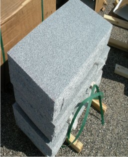
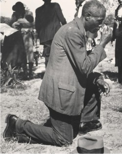

Enfield, Connecticut (860) 924-4292

FLAT MARKERS are the most common type of cemetery headstone which rests at the head of the plot. Though they are the simplest and generally the least expensive memorial. They can be highly personalized and customized to memorialize your loved one and tell their unique story. We will walk you through your options and will help you select and design the perfect flat marker. Then we will turn your vision into a reality by transforming the granite into a lasting legacy and a beautiful work of art.
 We give you our pledge that when you place your confidence in us, your memorial will be carefully planned, faithfully produced, fairly priced, and permanently installed.

Our pricing includes Design, Lettering & Installation **We do not work on a commission basis.** We do not count/charge per letter. We do not have a middleman. We are affordable and offer quality on all our products.